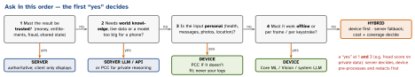

architecture · folio
In one line: Place each computation where its binding constraint is cheapest: trust (anything authoritative runs on a server — the client is attacker-controlled), knowledge and size (world knowledge, big models, live data → cloud), privacy, offline and latency (personal data, per-frame work, no network → device). Most real features are hybrid: device first, server (or Private Cloud Compute) as the fallback, results cached and versioned.
Download PDF Print view LaTeX source


| factor | on-device | Private Cloud Compute (Apple) | your server / cloud LLM |
|---|---|---|---|
| latency | no network; first model load is slow — load early, reuse | network round trip | round trip + queue; radio wake-up on cellular |
| cost per call | free to you; paid in the user’s battery + heat | Apple’s servers; quota + entitlement (iOS 27 API) | you pay per request / GPU hour, scales with users |
| privacy | data never leaves the phone | leaves, but stateless, no privileged access, verifiable | leaves: consent, retention, region, subprocessors |
| offline | ✓ | × | × |
| model / quality | small (system LLM ≈3B, 2-bit; your Core ML model) | much larger; 32K-token context, reasoning | any size, frontier models, tools, RAG over your data |
| freshness | updates with the OS / app / asset pack | Apple-managed | instant; live data; world knowledge |
| coverage | AI-capable devices only; memory + thermal limits | Apple Intelligence devices only(unverified) | every device, Android, web — one behaviour |
| logic security | untrusted: code + weights extractable, results forgeable | not your server — no custom logic | authoritative; secrets stay here |
| observability | no server logs; on-device evals, opt-in telemetry | none for you | full logs, A/B, evals — mind PII |
The options
- Apple on-device: Foundation Models (system LLM, offline, free; check
availability); Core ML / Core AI for your model; Vision, Natural Language, Speech for common tasks — try these first. - Android on-device: Gemini Nano runs in the AICore system service; apps use ML Kit GenAI APIs (Prompt, Summarization, Proofreading, Rewriting, Image Description, Speech Recognition). AICore ships and updates the model — no model in your APK.
- Private Cloud Compute: Apple’s server extension of on-device AI. Five requirements — stateless computation, enforceable guarantees, no privileged runtime access, non-targetability, verifiable transparency. The device encrypts only to nodes whose attested software is in a public transparency log; an OHTTP relay run by a third party hides the IP.
- Your server: any model, tools and data; you own cost, keys, logs and legal basis. API keys never ship in the app — the app calls your backend, which calls the model.
Hybrid patterns
- Device first, server fallback: unavailable device, context too long, low confidence, guardrail refusal → escalate (with consent).
- Router / cascade: a cheap on-device classifier decides which requests are “hard” and need the big model.
- Split: device pre-processes — OCR, speech-to-text, embeddings, PII redaction, downscaling — and sends less, safer data.
- Server trains, device infers: ship or download the model; personalise on device (Core ML
MLUpdateTask); only the model moves, not the data. - Precompute + cache: shared results (recommendations, translations of shared content) computed once on the server, cached on devices.
- Speculative: show the on-device draft now, replace it if the server’s answer arrives and differs — label which one the user sees.
Traps
- “On-device is free” — battery, heat, memory (jetsam), app size, device coverage.
- Validating a purchase, score or discount on the client — anything on the device can be patched; the server decides.
- A vendor LLM key in the app “to save a backend” — extracted in minutes; proxy it.
- Server fallback that silently uploads personal data — fallback needs consent + redaction.
- No unavailable path: the system model is missing on older or ineligible devices.
Example — device first, server fallback
protocol Summarizer: Sendable {
func summarize(_ text: String) async throws -> String }
struct HybridSummarizer: Summarizer {
let local: any Summarizer // Foundation Models session
let remote: any Summarizer // YOUR backend, not a vendor key
let consented: @Sendable () -> Bool
func summarize(_ text: String) async throws -> String {
if SystemLanguageModel.default.isAvailable,
text.count < 6_000 { // rough fit; 26.4+: tokenCount(for:)
do { return try await local.summarize(text) }
catch { /* context / guardrail / refusal: escalate */ }
}
guard consented() else { throw SummaryError.needsConsent }
return try await remote.summarize(redactPII(text))
}
}Model delivery and results
- Bundle the model (app size, every user pays) or download it: Background Assets managed asset packs (essential before launch, prefetch, or on demand; optional Apple hosting), then
MLModel.compileModel(at:)for a Core ML file. - Store model id + version beside every output; cache results keyed by
hash(input) + modelVersion; a new model invalidates, never silently mixes. - Results are data: sync them through the normal sync path (private → the user’s devices only). Compute shared results once on the server, private ones per device.
- Same feature, different engines → different answers on iOS, Android, old phones: design the UI for variable quality, evaluate each path separately.
Remember
Trust → server · knowledge → cloud · private, offline, per-frame → device · everything else: device first, cloud fallback, version the results.